HAÏTI
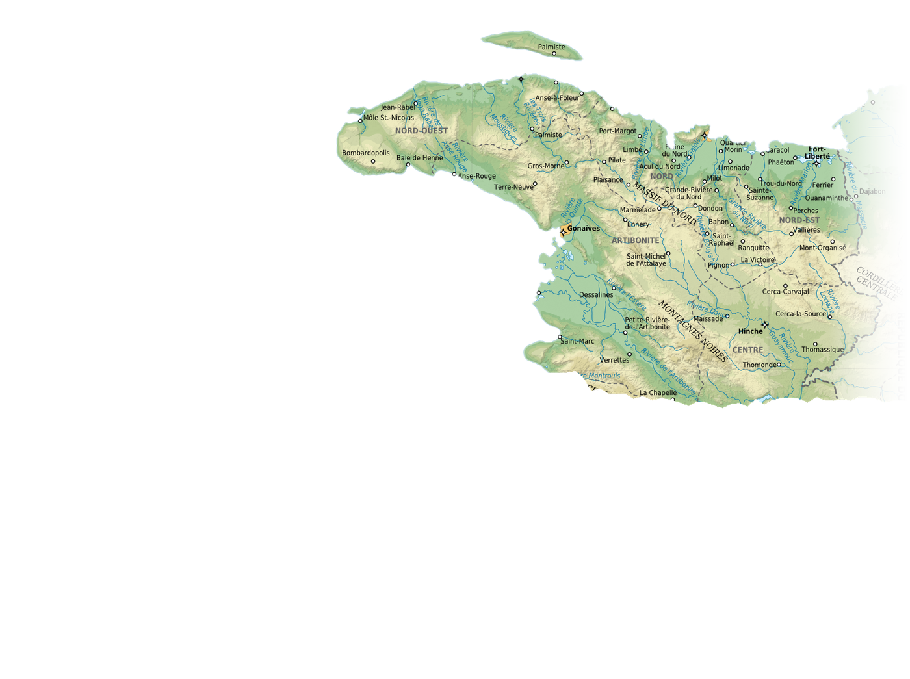
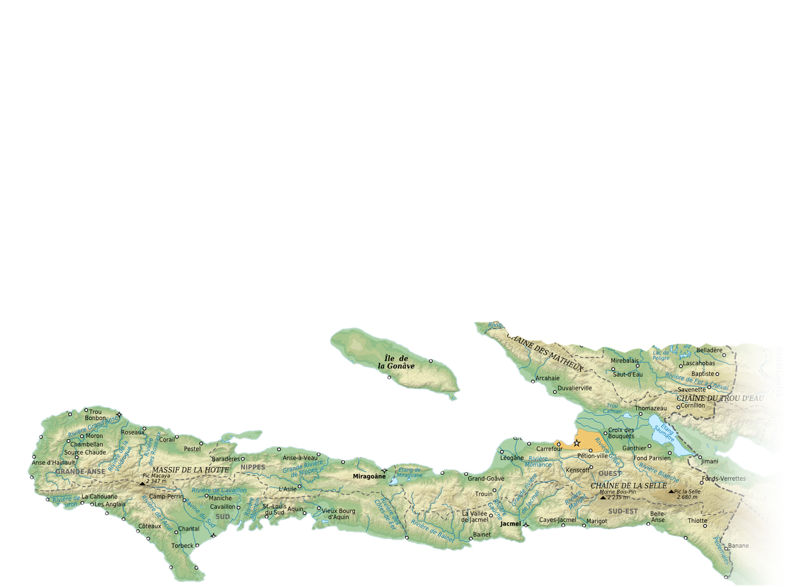
NORD / SUD · DEUX PAYS1807
REC 00:00:00:00
HAÏTI · 1807
1806
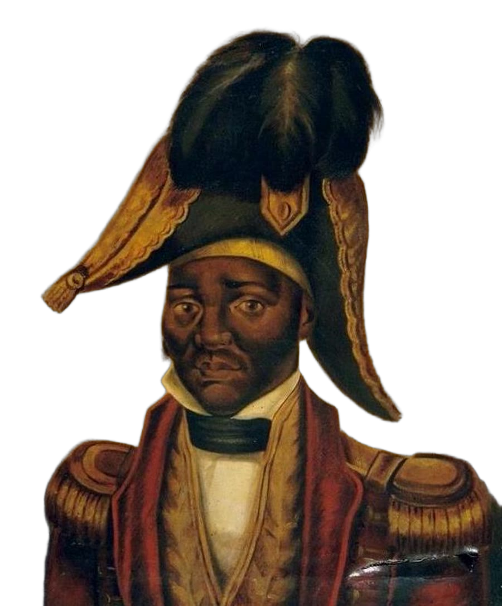
Empereur Jacques Iᵉʳ
† 17 OCT. 1806
PONT-ROUGE
PORTE DE PORT-AU-PRINCE
PORTE DE PORT-AU-PRINCE
1807
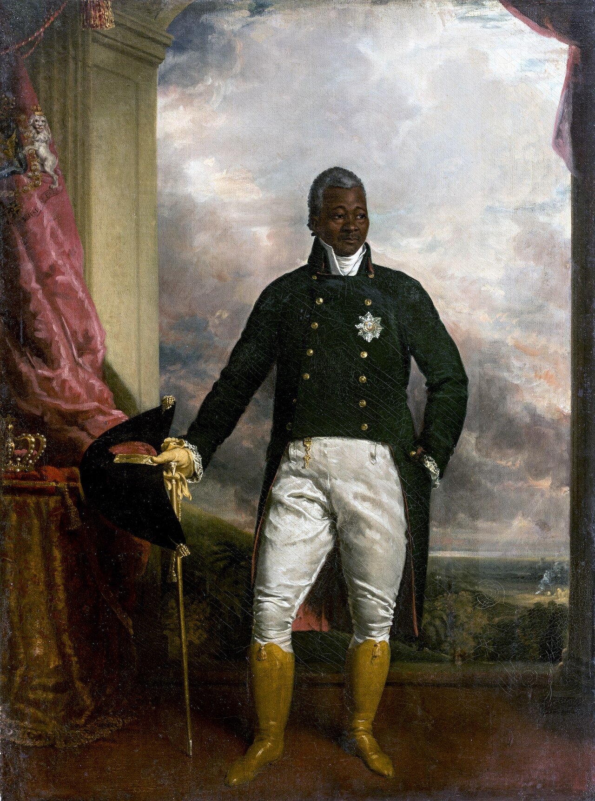
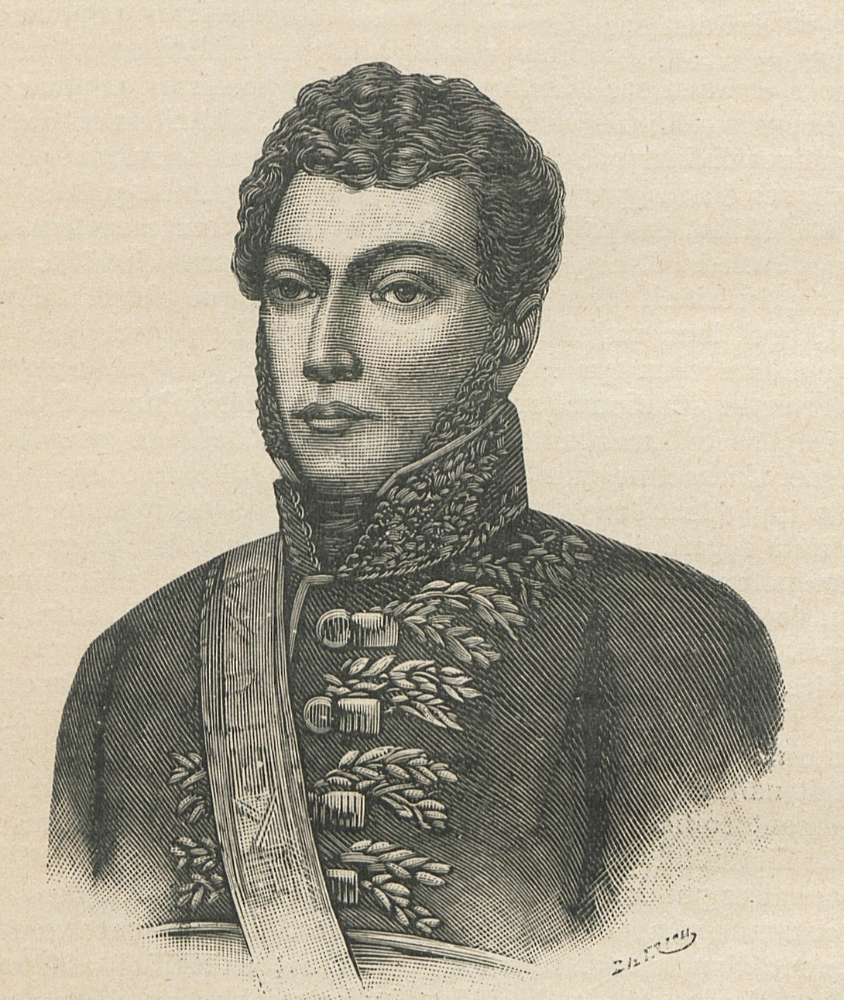
Christophe
Pétion
VS
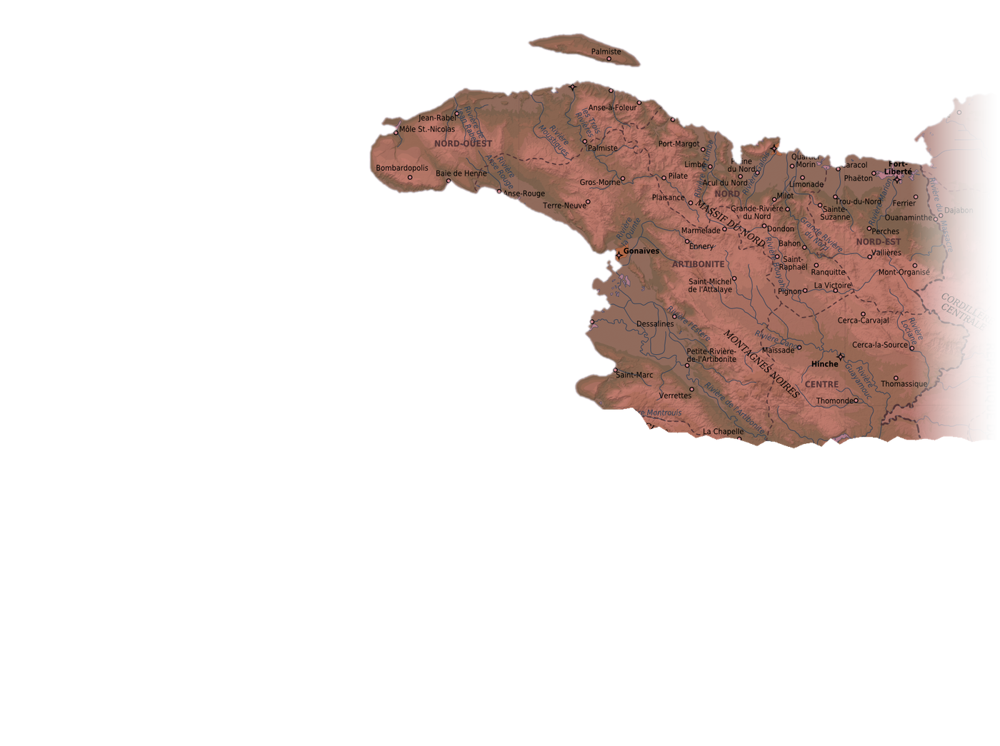
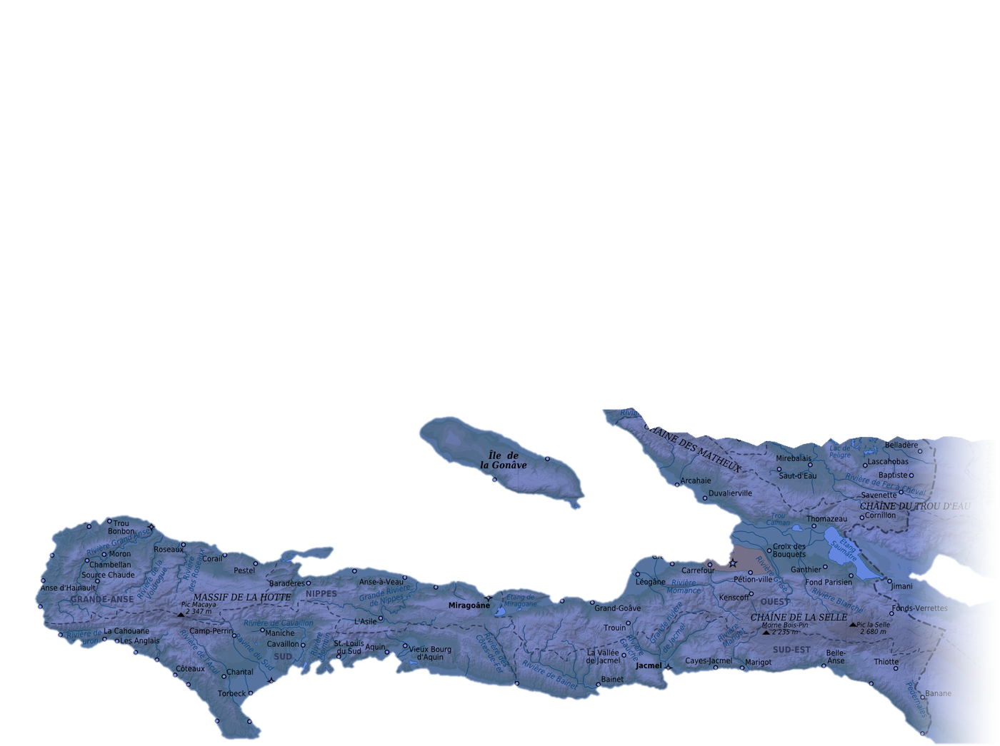
NORD
SUD
FRONTIÈRE APPROXIMATIVE
1807 — 1820
1807 — 1820
NORD

État du Nord
ROI · 1811
ÉTAT D'HAÏTI · 1807
ROYAUME D'HAÏTI · 1811
ROYAUME D'HAÏTI · 1811
LE CAP
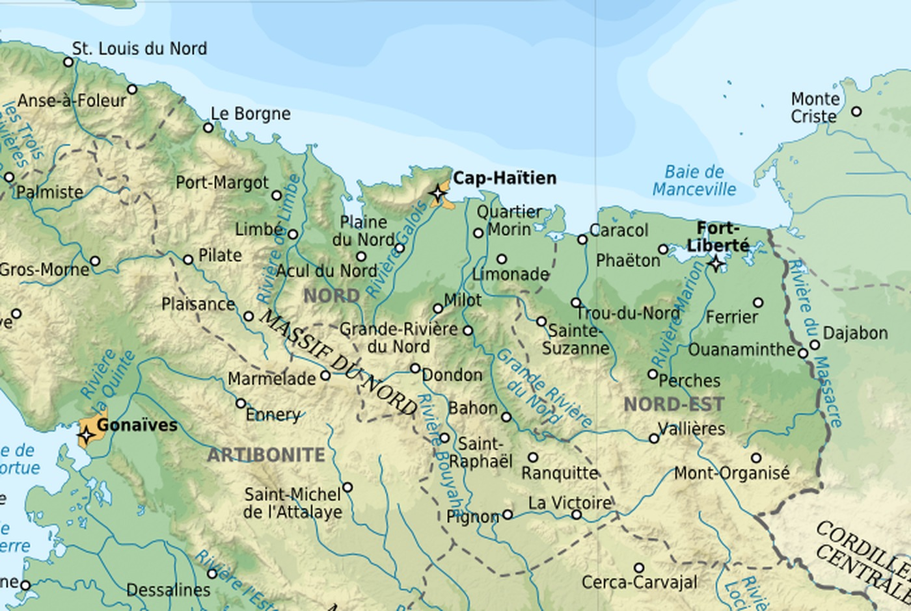
Cap-Henri · auj. Cap-Haïtien
PALAIS SANS-SOUCI
MILOT · GRAVURE 1873
19°46′N · 72°12′O
MILOT · GRAVURE 1873
19°46′N · 72°12′O
SUD
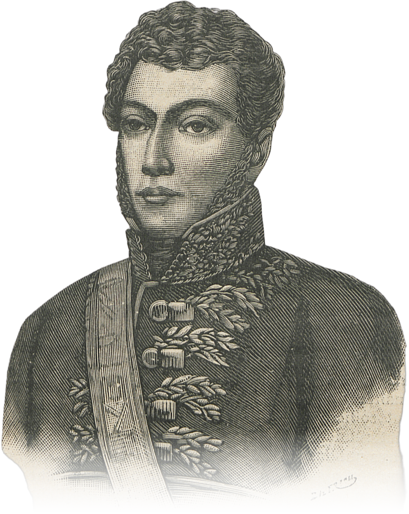
République du Sud
PRÉSIDENT · 1807
ÉLU LE 9 MARS 1807
MORT EN 1818
MORT EN 1818
PORT-AU-PRINCE
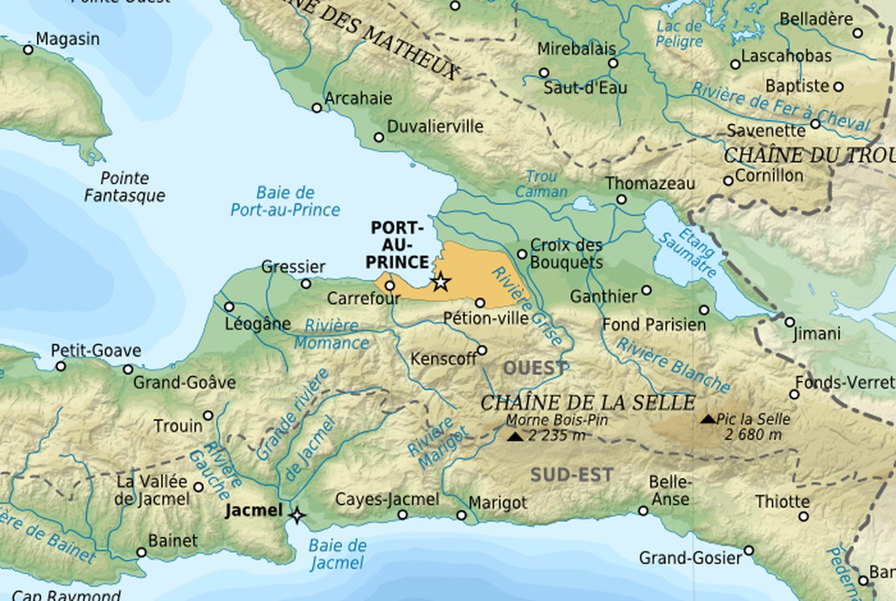
Port-au-Prince
PORT-AU-PRINCE
PHOTO VERS 1890
18°32′N · 72°20′O
PHOTO VERS 1890
18°32′N · 72°20′O
GUERRE
1807
1820
GUERRE CIVILE
NORD CONTRE SUD
NORD CONTRE SUD
1820
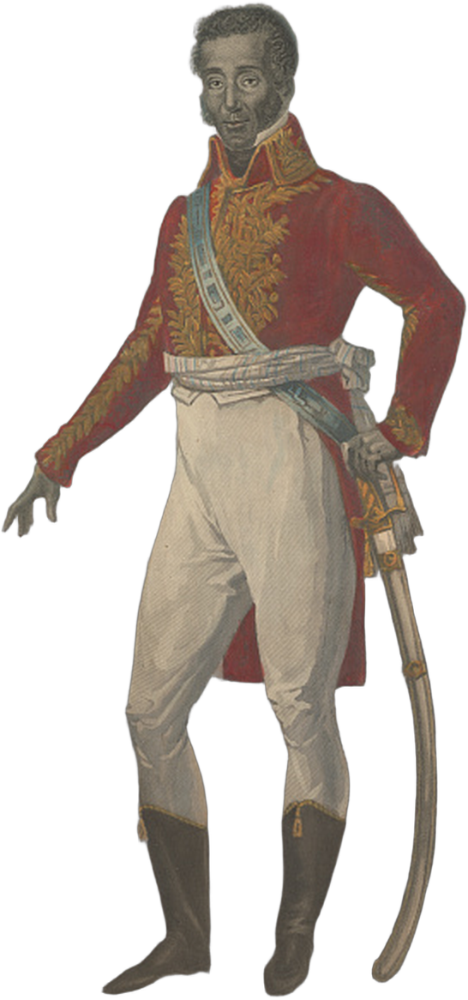
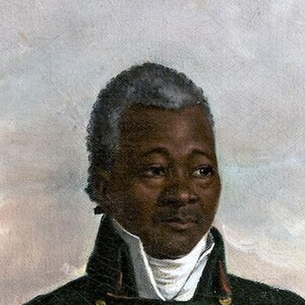
OCT. 1820
Jean-Pierre Boyer
RÉUNIFICATION
OCTOBRE 1820
OCTOBRE 1820
×2
Royaume
République
Cap-Henri
Port-au-Prince
NORD · NOIR ET ROUGE
SUD · BLEU ET ROUGE
OUI
NON
Répondez ici
HISTOIRE D'HAÏTI · 1807